Clustering Pseudotime Inference on Skin Cell scRNA-seq
Matt Karikomi
2019-05-06
RSoptSC.RmdThis is an example of clustering, marker identification and pseudotime inference on a set of skin cells.
Load and Preprocess Data
A matrix of counts with rows as genes and columns as cells must be provided. Gene and cell ids, and [optionally] a vector of labels e.g. cell types are provided in separate text files. Here we load example data from NCBI GEO (GSE67602) originally published in Joost et al 2016.
library(RSoptSC)
df <- system.file("extdata", "GSE67602_JoostData.csv.bz2", package = "RSoptSC")
gf <- system.file("extdata", "GSE67602_JoostGenes.csv.bz2", package = "RSoptSC")
cf <- system.file("extdata", "GSE67602_JoostCells.csv.bz2", package = "RSoptSC")
af <- system.file("extdata", "GSE67602_JoostAnnotation.csv.bz2", package = "RSoptSC")
GSE67602_Joost <- LoadData(df, gf, cf, af)Compute the Similarity Matrix
Run L2R2 on the processed data, outputting the number of iterations and value of the objective.
S <- SimilarityM(lambda = 0.05,
data = filtered_data$M_variable,
dims = 3,
pre_embed_method = 'tsne',
perplexity = 20,
pca_center = TRUE,
pca_scale = TRUE)Compute distances on the similarity matrix. If the truncated graph has multiple components, join them to improve inter-cluster distance estimation.
Cluster the Cells
Infer cluster number using spectra of the ensemble Laplacian.
In this analysis, we obtain bounds on the number of clusters, where the lower bound is equal to the number of zero eigenvalues and the upper bound is the index of the eigenvalue preceding the largest eigengap. We take this value as the cluster number here.
plot(c(1:20),
clusters$eigs$val[1:20],
xlab = NA,
ylab = 'eigenvalues',
main = 'Eigenvalues of the Graph Laplacian')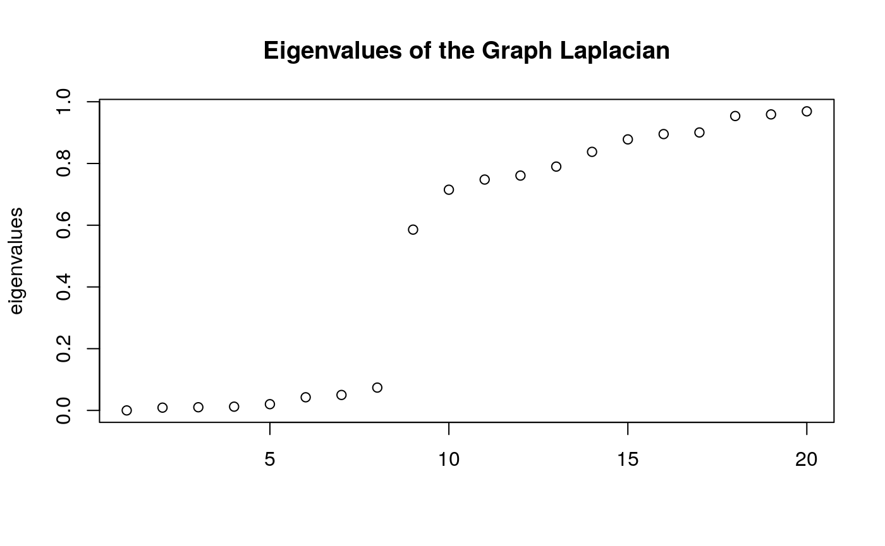
Factor the similarity matrix such that W = HxH’, using the computed cluster number for the rank of H.
output_NMF <- NMF::nmf(x = Matrix::as.matrix(S$W),
rank = n_clusters,
method = 'lee',
seed = 'nndsvd',
.options = 'nP');
H <- NMF::basis(output_NMF)Assign cluster labels to the cells.
Visualize the Clusters
Cells are labeled by cluster membership and plotted on low-dimensional embedding (t-SNE) of the similarity matrix.
# define a scheme for the coloring. This is a required parameter for plotting discrete (factor) data
colorscale <- ColorHue(n = length(unique(labels)))
colorscale <- colorscale$hex.1.n.
# plot clusters
FeatureScatterPlot(flat_embedding = low_dim_mapping$flat_embedding,
feature = as.factor(labels),
title = "NMF Cluster Labeling",
subtitle = "t-SNE Embedding",
featurename = "Cluster ID",
colorscale = colorscale)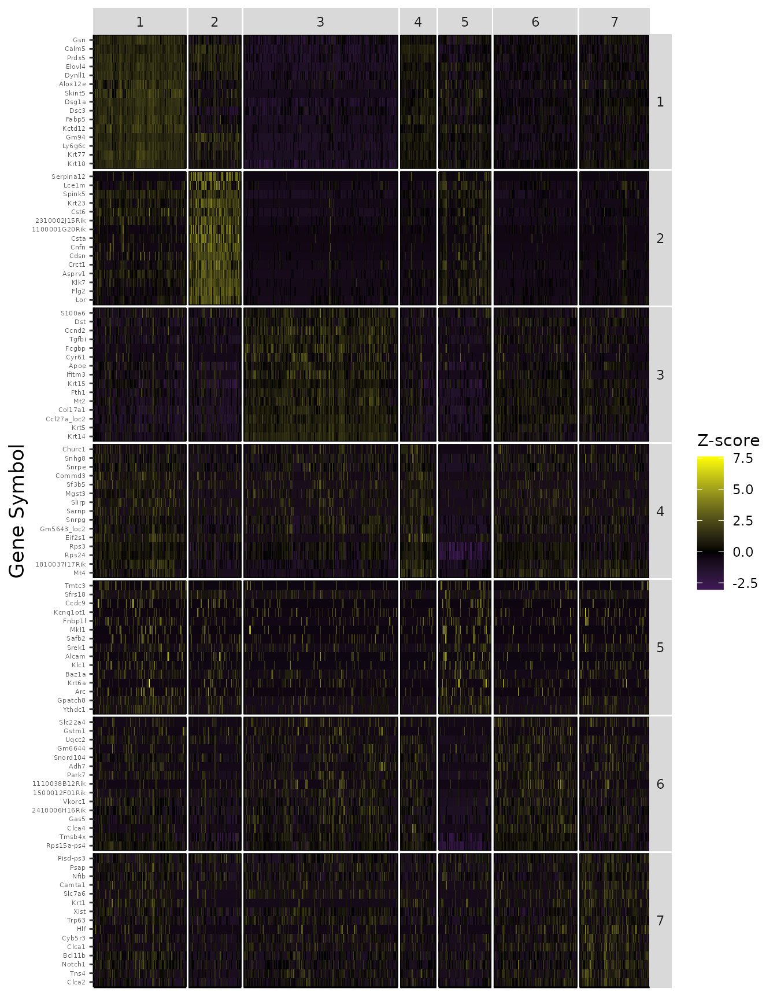
As described in Joost et al (2016), Subpopulations including Basal, IFE-DI, IFE-DII, IFE-KI, IFE-KII were identified by standard techniques.
true_labels <- GSE67602_Joost$annotation
# plot clusters
FeatureScatterPlot(flat_embedding = low_dim_mapping$flat_embedding,
feature = as.factor(true_labels),
title = "True Labeling",
subtitle = "t-SNE Embedding",
featurename = "Annotated Cell Types")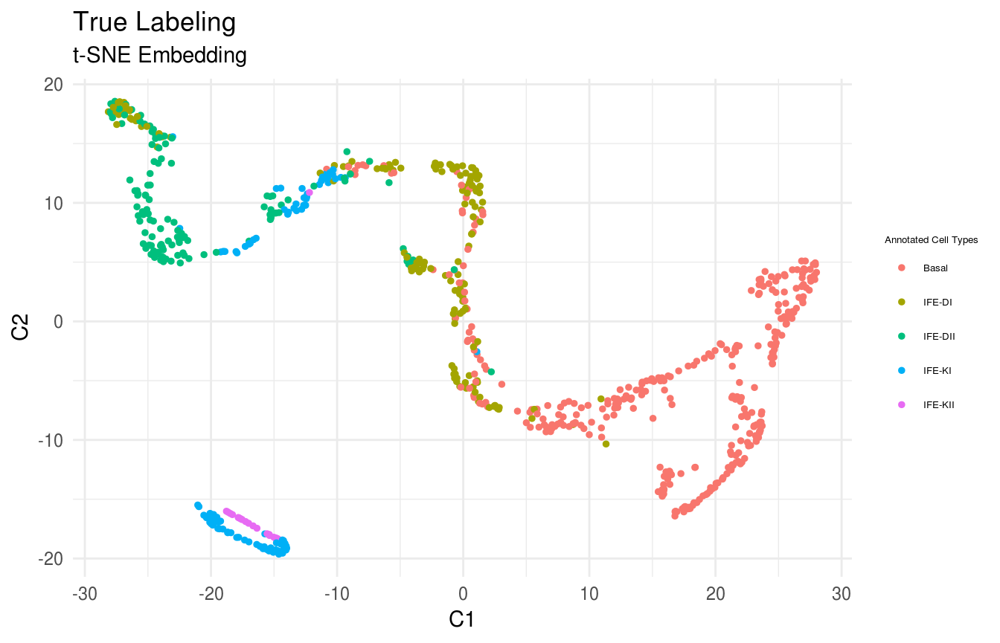
Find cluster marker genes.
Previously, we clustered the cells using L2R2/Sym-NMF, now we analyze the markers of the clusters. We look at the normalized expression values of all genes using pre-selection parameters similar to the pre-clustering selection parameters. The top six markers selected as described in Wang et. al. As expected, markers Krt14, Krt10, and Lor are inferred for clusters overlapping with IHC-based Basal, Differentiated (IFE-DI, IFE-DII), and Keratinized (IFE-KI, IFE-KII) cell annotations.
markers <- GetMarkerTable(counts_data = filtered_data,
cluster_labels = labels,
H = H,
n_sorted = 25,
gene_names = gene_names,
gene_expression_threshold = 3,
n_features = 20000,
use_H = TRUE)
PlotTopN(data = log(data+1),
gene_names = gene_names,
cluster_labels = labels,
markers = markers$all,
n_features = 5)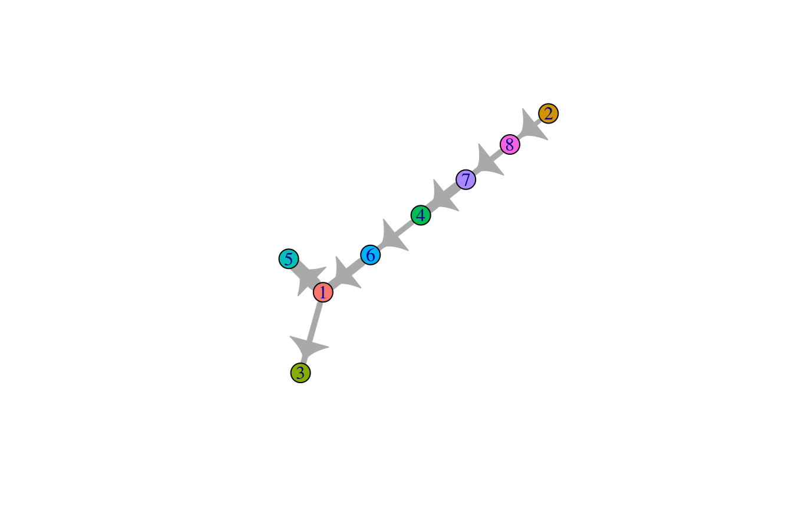
Pseudotime Inference
Compute cluster-cluster graph and find the root cluster.
cluster_ptime <- FindRootCluster(cluster_labels = labels,
flat_embedding = low_dim_mapping$flat_embedding,
dist_graph = low_dim_mapping$dist_graph,
dist_flat = low_dim_mapping$dist_flat,
reverse = TRUE)Compute the cell-cell graph and find the root cell.
root_cell <- FindRootCell(use_flat_dist = FALSE,
cluster_order_by = "distance",
cell_order_by = "distance",
graph_cluster_mst = cluster_ptime$cluster_mst,
dist_graph = low_dim_mapping$dist_graph,
dist_flat = low_dim_mapping$dist_flat,
cluster_labels = labels,
root_cluster = cluster_ptime$root_cluster)Pseudotime Visualization
Compute the directional minimum spanning tree on the cluster-cluster graph for visualization.
cluster_predecessors <- GetPredecessors(cluster_ptime$cluster_mst, cluster_ptime$root_cluster)
cluster_dtree <- GetDominatorTree(cluster_predecessors, cluster_ptime$graph_cluster)
PlotLineage(cluster_dtree)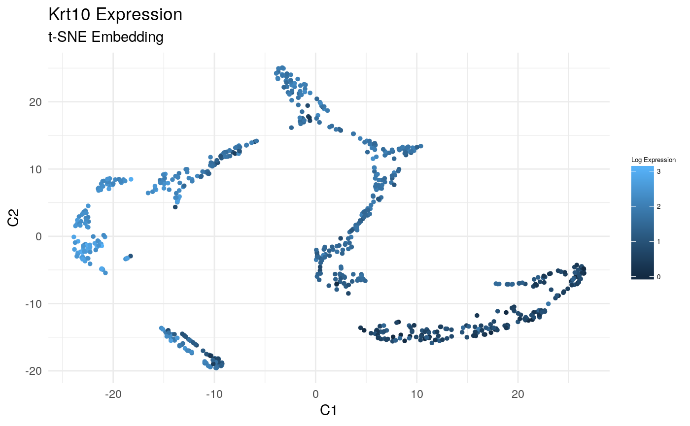
Compute the path-length vector from root, and plot the cells in the previously computed low-dimensional embedding.
pseudotime <- low_dim_mapping$dist_graph[root_cell,]
# plot pseudotime
FeatureScatterPlot(flat_embedding = low_dim_mapping$flat_embedding,
feature = pseudotime,
title = "Pseudotime Labeling",
subtitle = "t-SNE Embedding",
featurename = "Pseudotime Distance")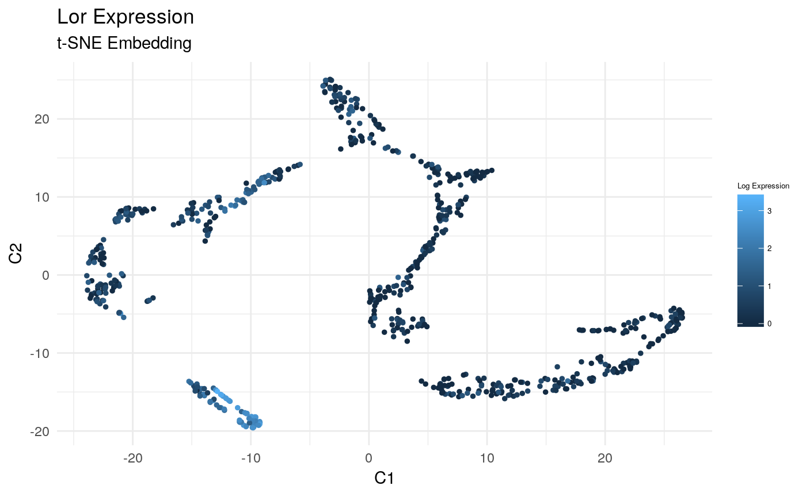
Plot Gene Expression on the Flat Embedding
Plot Expression of Krt14, Krt10, and Lor in t-SNE Space:
gene_index <- which(gene_names == 'Krt14')
data_gene <- logdata[gene_index,]
# plot features
FeatureScatterPlot(flat_embedding = low_dim_mapping$flat_embedding,
feature = data_gene,
title = "Krt14 Expression",
subtitle = "t-SNE Embedding",
featurename = "Log Expression")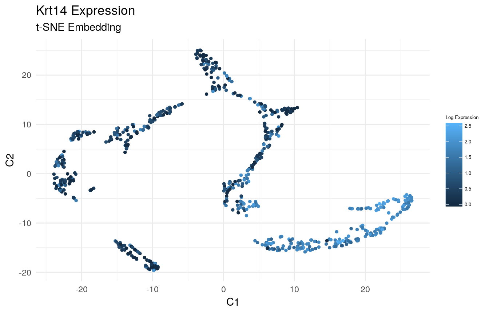
gene_index <- which(gene_names == 'Krt10')
data_gene <- logdata[gene_index,]
# plot features
FeatureScatterPlot(flat_embedding = low_dim_mapping$flat_embedding,
feature = data_gene,
title = "Krt10 Expression",
subtitle = "t-SNE Embedding",
featurename = "Log Expression")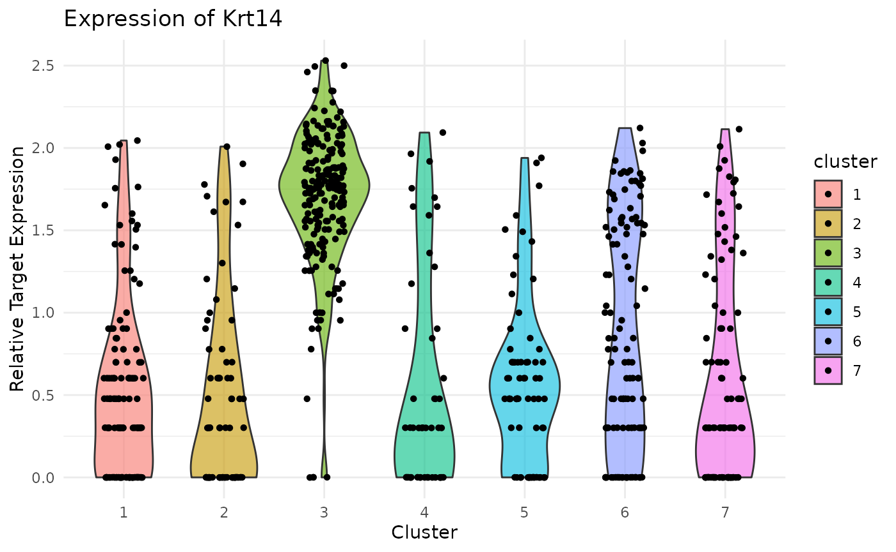
gene_index <- which(gene_names == 'Lor')
data_gene <- logdata[gene_index,]
# plot features
FeatureScatterPlot(flat_embedding = low_dim_mapping$flat_embedding,
feature = data_gene,
title = "Lor Expression",
subtitle = "t-SNE Embedding",
featurename = "Log Expression")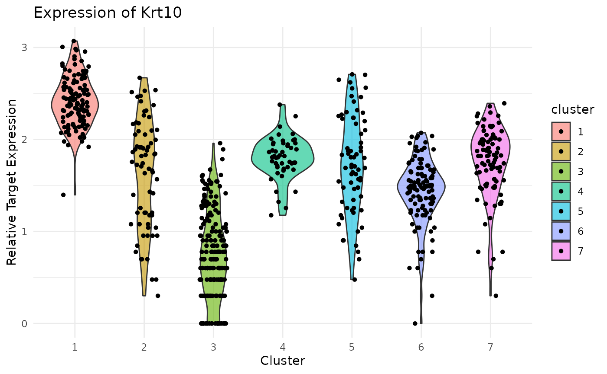
Plot Gene Expression Levels in Cells Grouped by Cluster
Violin Plot of Krt14 expression. Note strong expression of the basal compartment:
plot(ViolinPlotExpression(data = logdata,
gene_names = gene_names,
labels = labels,
gene_name = "Krt14"))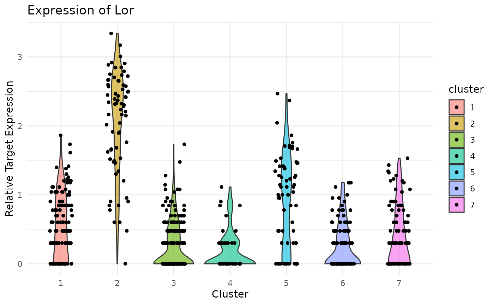 Violin Plot of Krt10 expression. Note uniformly high expression in the IFE-DI/DII compartments:
plot(ViolinPlotExpression(data = logdata,
gene_names = gene_names,
labels = labels,
gene_name = "Krt10"))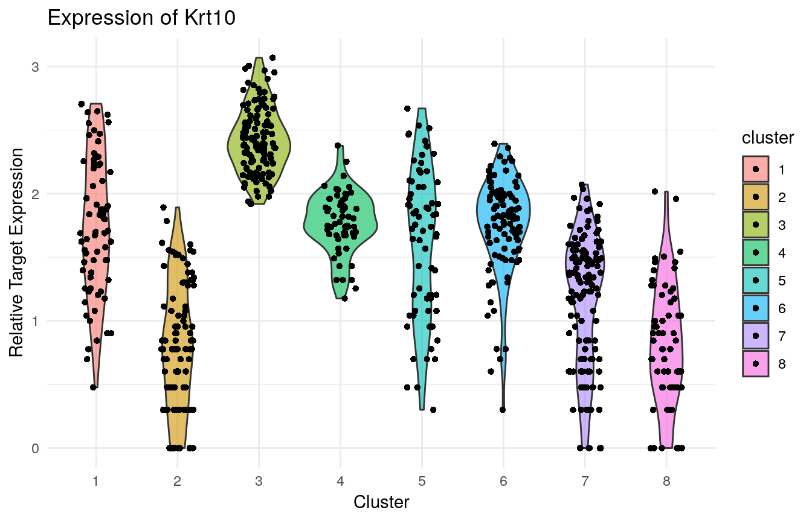 Violin Plot of Lor expression. Note strong expression in the terminally differentiated IFE-KI/KII compartments:
plot(ViolinPlotExpression(data = logdata,
gene_names = gene_names,
labels = labels,
gene_name = "Lor"))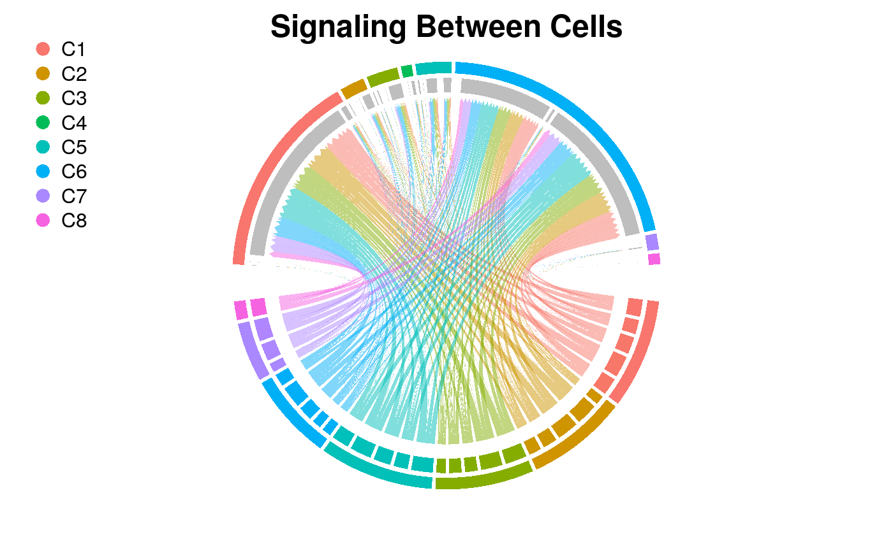
Analyze Signaling Mediated by a Ligand-Receptor Family
In order to analyze signaling, we can load in tables which describe a pathay in detail. There are two tables needed, one that specifies all unique ligand receptor combinations and another that specifies receptor/target/up|down combinations. Example tables for the TgfB pathway are provided in extdata/ and loaded here for the current skin data set. Using the ImportPathway function, an inner join over the two tables tabulates all ligand/receptor/target/direction 4-tuples. We then compute the probability of intercellular interaction based on this pathway.
library(knitr)
library(kableExtra)
lig_rec_path <- system.file("extdata", "tgfb_lig_rec.tsv", package = "RSoptSC")
rec_target_path <- system.file("extdata", "tgfb_rec_target_both.tsv", package = "RSoptSC")
pathway <- ImportPathway(lig_table_path = lig_rec_path,
rec_table_path = rec_target_path,
data = logdata,
gene_names = gene_names)
pathway$pathway %>% kable() %>% kable_styling()| receptor | ligand | target | direction |
|---|---|---|---|
| Tgfbr1 | Tgfb1 | Zeb2 | up |
| Tgfbr1 | Tgfb1 | Smad2 | up |
| Tgfbr1 | Tgfb1 | Wnt4 | up |
| Tgfbr1 | Tgfb1 | Wnt11 | up |
| Tgfbr1 | Tgfb1 | Bmp7 | up |
| Tgfbr1 | Tgfb1 | Sox9 | up |
| Tgfbr1 | Tgfb1 | Notch1 | up |
| Tgfbr1 | Tgfb1 | Dnmt3b | down |
| Tgfbr1 | Tgfb1 | Dnmt1 | down |
| Tgfbr1 | Tgfb2 | Zeb2 | up |
| Tgfbr1 | Tgfb2 | Smad2 | up |
| Tgfbr1 | Tgfb2 | Wnt4 | up |
| Tgfbr1 | Tgfb2 | Wnt11 | up |
| Tgfbr1 | Tgfb2 | Bmp7 | up |
| Tgfbr1 | Tgfb2 | Sox9 | up |
| Tgfbr1 | Tgfb2 | Notch1 | up |
| Tgfbr1 | Tgfb2 | Dnmt3b | down |
| Tgfbr1 | Tgfb2 | Dnmt1 | down |
| Tgfbr2 | Tgfb1 | Smad2 | up |
| Tgfbr2 | Tgfb1 | Wnt4 | up |
| Tgfbr2 | Tgfb1 | Zeb2 | up |
| Tgfbr2 | Tgfb1 | Sox9 | up |
| Tgfbr2 | Tgfb1 | Notch1 | up |
| Tgfbr2 | Tgfb1 | Wnt11 | up |
| Tgfbr2 | Tgfb1 | Bmp7 | up |
| Tgfbr2 | Tgfb1 | Dnmt1 | down |
| Tgfbr2 | Tgfb1 | Dnmt3b | down |
| Tgfbr2 | Tgfb2 | Smad2 | up |
| Tgfbr2 | Tgfb2 | Wnt4 | up |
| Tgfbr2 | Tgfb2 | Zeb2 | up |
| Tgfbr2 | Tgfb2 | Sox9 | up |
| Tgfbr2 | Tgfb2 | Notch1 | up |
| Tgfbr2 | Tgfb2 | Wnt11 | up |
| Tgfbr2 | Tgfb2 | Bmp7 | up |
| Tgfbr2 | Tgfb2 | Dnmt1 | down |
| Tgfbr2 | Tgfb2 | Dnmt3b | down |
Circos Plot of Intercellular Network
Now plot the previous result as a circos plot on the top five ligand-producing and top five receptor-bearing cells from every cluster. The upper hemisphere of the plot shows receptor-bearing cells. The chords of the plot are colored by the ligand-producing cells in the lower hemisphere.
SigPlot(P = Pmats$P_agg,
cluster_labels = labels,
lig_cells_per_cluster = 5,
rec_cells_per_cluster = 5,
rgb_gap = 0.06,
title_text = "Signaling Between Cells")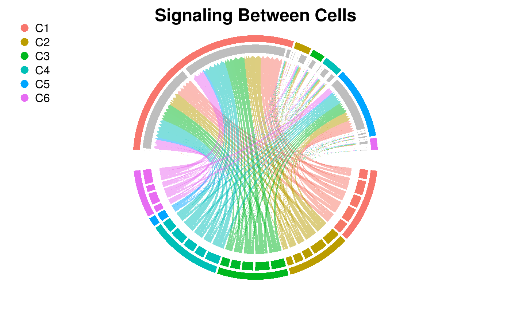
Circos Plot of Intercluster Network
Directional plot of cluster-to-cluster signaling. The root of the directional chord is raised.
cluster_P <- ClusterSig(Pmats$P_agg,
cluster_labels = labels)
SigPlot(P = cluster_P,
cluster_labels = c(1:n_clusters),
rgb_gap = 0.60,
title_text = "Signaling Between Clusters")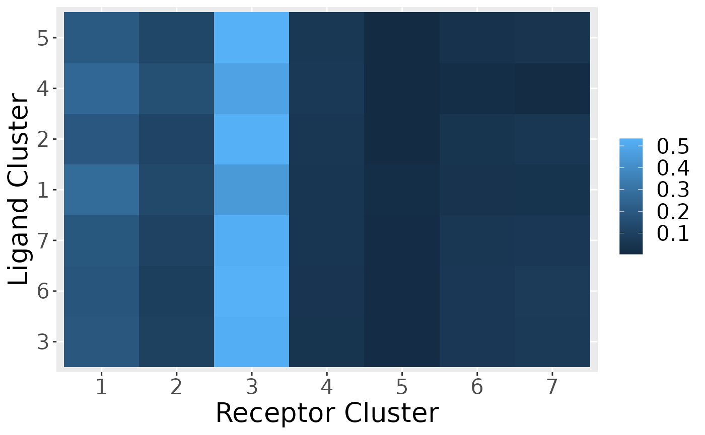
Heatmap of Signaling Marker Expression
Visualize the expression of ligand/receptor and up/down target expression across clusters
gene_list = c('Tgfb1', 'Tgfb2',
'Tgfbr1', 'Tgfbr2',
'Zeb2','Smad2','Wnt4','Wnt11','Bmp7','Sox9','Notch1')
PlotClusterExpression(data = logdata,
gene_names = gene_names,
cluster_labels = labels,
markers = gene_list)